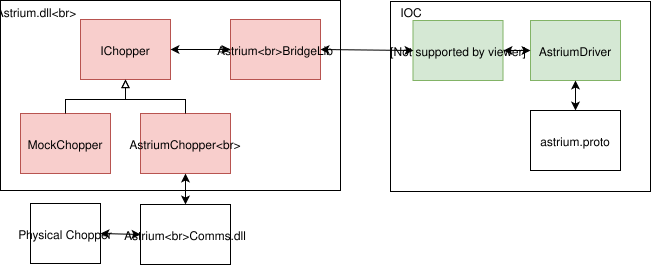
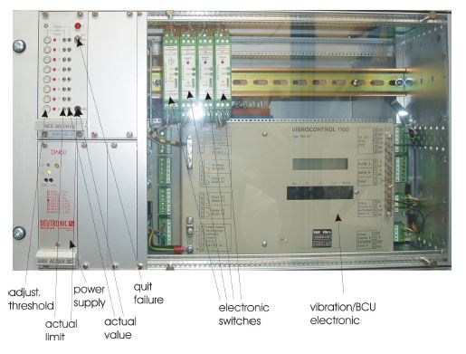

Astrium Chopper
These are installed on LET as Choppers 1 and 5
Note that these controllers are to be retired end of 2019.
Software Architecture
The IOC for the Astrium choppers works similarly to that of the Mk3 in that it uses a .NET C# DLL to communicate with the servers running the chopper control programs. The architecture can be described as:

The red part of this diagram is written in C++/CLI to communicate with the .NET AstriumComms.dll and builds to another dll called Astrium.dll, which lives in the support directory. The green part is the asyn driver that communicates with Astrium.dll. StreamDevice is then used to communicate with this driver so as to leverage the formatting abilities of protocol files.
Hardware quirks
Sending a calibrate when the device has already been calibrated causes the chopper to get into a state that must be physically restarted to fix. Disallowing this is implemented into the IOC.
When a frequency is set the device multiplies it by 10 e.g. sending 1Hz to the device will cause the chopper to run at 10Hz
There is a resonance that means the chopper cannot run at 180Hz, this is reflected in the control scripts on LET and in the IOC itself.
There is a resume command in the C# dll. This does nothing.
The frequency SP_RBV from the device always reads zero.
Sending a frequency setpoint may cause the frequency setpoint to be “corrupted” (the chopper will report that it is phasing to one value, but actually phase to an entirely different value). This is mitigated in the driver by resending the phase any time the frequency is set.
Chopper 1 (NCS016)
If the control program on the chopper PC is restarted for any reason, a reset will need to be performed before the chopper can be calibrated (which is also needed after a program restart). This is done with a physical toggle switch on the monitoring system crate in the top of the left-hand cabinet. (Fault LED 8 on the same card will be illuminated showing the error).
This cabinet is normally locked and so an instrument scientist will need to be contacted to gain access.
Photograph of the actual crate

The toggle switch is labelled quit failure and LED 8 can be seen to the right of the potentiometer labelled adjust threshold.
Chopper 5 (NCS017)
It is believed that the reset is not required on this system.
Troubleshooting
Build Issues
We are now using Visual Studio 2019 which allows a target of “latest W10 sdk” as the version, so we no longer need to use a specific W10 for our builds. This error was seen briefly on mk3 build too. If you see it, post to technical on Teams.
If you’re having trouble building the Astrium chopper with error messages relating to the Boost library, you need to update visual studio 2017 (15.9.21 works) as there is a compiler bug in earlier versions of VS.
If you’re getting fatal error LNK1104: cannot open file 'MSCOREE.lib' you need to add WindowsSDK 10.0.15063.xxx (or possibly ALL available Windows SDKs that Visual studio has available, but try the one mentioned first). Run the Visual Studio Installer, Select modify, and scroll through the sidebar and/or the ‘Individual Components’ tab looking for Windows SDK versions. I (Liam, with Tom’s help) ended up installing 50GB+ of extra packages to get this to work. If you solve the issue in a more streamlined way (i.e. only installing the above version of the SDK, rather than everything) please update this troubleshooting tip.